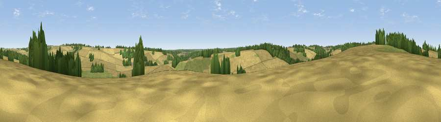

Viewpoint near Hampstead Norreys
#43068 in England · top 90% of its area beats it · near Hampstead NorreysThe view, rendered

A 360° render of this exact spot computed from the terrain model, tree cover and land cover — summer colours, afternoon light, calibrated against photographs of famous viewpoints. Real trees, hedges and buildings will differ in detail.
The panorama
Grey silhouette: terrain skyline in each direction (720 bearings, Earth curvature and refraction included). Dashed green: skyline with trees (+15 m) and buildings (+8 m) as obstacles. Blue strip: how far the ground is visible on each bearing.
Where the view opens
Wedge length = distance to the farthest visible ground on that bearing (vegetation-aware). Rings at 10, 25 and 50 km.
What fills the view
68% cropland · 21% grassland · 11% woodland
Angular shares of the visible panorama (visual magnitude), not map area. Landscape diversity 0.37 (0–1 Shannon).
Key numbers
More beautiful places nearby
The staircase of upgrades: each row has a higher view potential than everything closer. Driving times are estimates from straight-line distance, calibrated against real road routing — check an actual route before setting out.
| Place | Direction | Drive | Score |
|---|---|---|---|
| Viewpoint near Hampstead Norreys | SE · 2 km | ~5 min | 29.0 |
| Viewpoint near Compton | NE · 2 km | ~6 min | 44.3 |
| Viewpoint near Compton | NNE · 5 km | ~11 min | 64.1 |
| Castle Hill | NNE · 15 km | ~27 min | 68.3 |
| Round Hill | NNE · 16 km | ~28 min | 70.1 |
| Watership Down | S · 21 km | ~36 min | 71.4 |
| Beacon Hill | SSW · 22 km | ~36 min | 76.7 |
| Martinsell viewpoint | WSW · 37 km | ~56 min | 77.3 |
51.49742, -1.25123 · source: screening · position refined by local search. Computed location — check access rights before visiting.